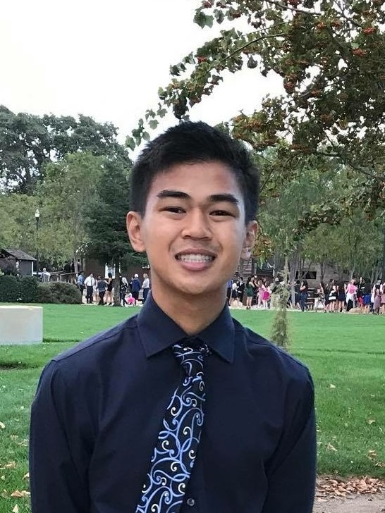

About Me

My name is John So, and I’m currently a senior at Dublin High and a member of the Dublin Engineering and Design Academy (DEDA) Computer Science Cohort. I’m currently enrolled in Digital Electronics, a course covering the basics of circuits and logic. Next year, I will be attending the College of Engineering in the University of California, Berkeley as an Electrical Engineering and Computer Sciences (EECS) major.
In the past, I’ve worked with web development and OOP languages through Computer Science/Software Engineering and AP Computer Science A, and general engineering through Principles of Engineering. This year in Digital Electronics, I worked with breadboards, logic, PLDs, simulations, and PCB design to better understand general electronics. In the future, I hope to be able to use my engineering knowledge in robotics to build solutions for the problems of today.
My interest in robotics stemmed from middle school, where I formed an FLL team, Mighty Robots, with my friends. I continued my experiences throughout high school as an active member of Dublin High’s robotics club, Gael Force Robotics. Under Team 5327B, I have competed as a driver, programmer, builder, and ultimately, team captain in the VEX Robotics Competition. Over the past three years, my teams have seen much success, including 3 World Championship Qualifications, 3 Tournament Champion Awards, 7 Design Awards (best engineering process), and 2 Excellence Awards (best overall team). Captaining my team to both state and international success has taught me that technical expertise isn’t enough; collaboration and management skills are needed to complete any project. This year, as a member of 5327C, I add my expertise in game strategy, design, and documentation to ultimately qualify us to the World Championship once again. As the club’s vice president, I hope to be able to use my vast experiences and knowledge to mentor not only my team, but all of Dublin High’s teams as well.
This past summer, I had the opportunity to apply my robotics experience to something more than just scoring points for a competition as an intern at PhaseSpace Inc. Under the CEO, Tracy McSheery’s, guidance, the intern team and I worked on several projects. Using motion capture and VR, we helped develop props for a traffic stop simulation for training officers in an effort to reduce police brutality rates. In addition, I worked with the openCV computer vision library to analyze images and lay the foundation for a real-time image recognition program. Our final project was to build a motion controlled robotic arm using PhaseSpace’s motion capture system, with an old prototype as guidance. During this last project, I saw my mechanical and electrical experience put to work as we machined, wired, and programmed the arm from scratch.
My internship at PhaseSpace has cemented my interests in engineering and STEM. In the future, I want to pursue electrical engineering, computer science, and mechanical engineering to further explore the world of artificial intelligence, robotics, and control systems because I firmly believe that they are the next Industrial Revolution; projects such as the one I worked on this summer will only become more commonplace. I want to be able to improve the lives of others through ideating, prototyping, and iterating the technology to do so. More than anything, I want to take part in tomorrow’s solutions to today’s problems.
Alternatively, contact me by email at osnhoj@gmail.com.